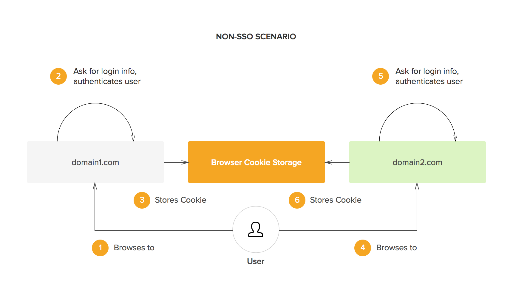
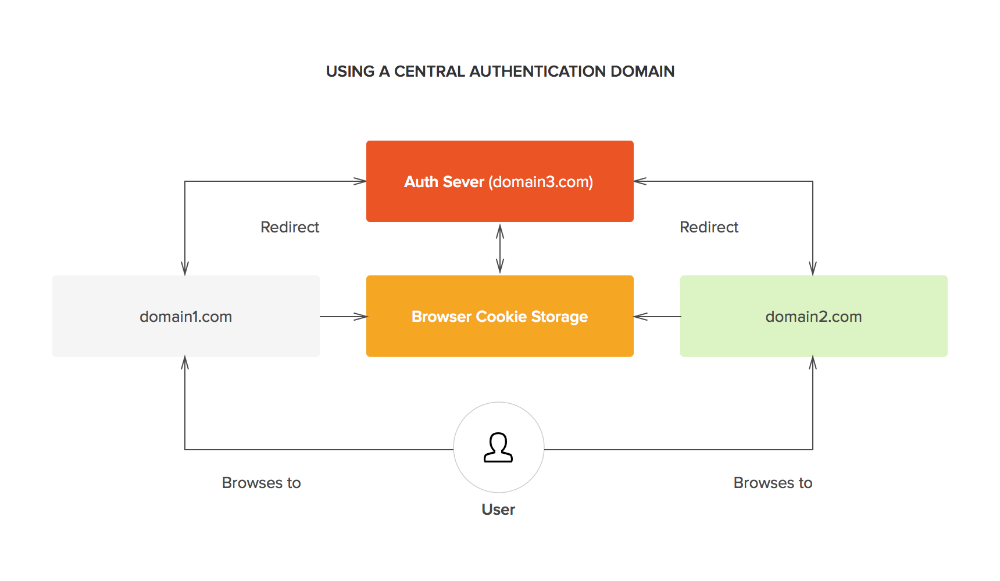

Single Sign-on
Single Sign On (SSO) là gì?
Một cách đơn giản SSO nghĩa là khi người dùng đăng nhập vào một hệ thống, họ sẽ đăng nhập vào tất cả các hệ thống khác liên quan.
Một ví dụ điển hình cho việc ứng dụng thuật ngữ này là Google. Google sử dụng cho những sản phẩm của họ như: Gmail, YouTube, Maps... Điều này được thực hiển bởi một "dịch vụ trung tâm" (trong trường hợp Google là accounts.google.com).
Xác thực SSO
Ban đầu, chúng ta có hai ứng dụng ở domain1.com và domain2.com. Mỗi ứng dụng tự quản lý đăng nhập bằng cookie của trình duyệt.

Chúng ta có thể chia sẻ cookie giữa hai domain nếu cả hai có cùng một
root. Ví dụ domain thứ nhất là xxx.abc.com và domain thứ
hai là yyy.abc.com. Chúng ta có thể thiết lập cookie cho
root là .abc.com.
Nếu hai ứng dụng không cùng domain thì không thể chia sẻ cookie.

Để giải quyết vấn đề, chúng ta có thể thêm một ứng dụng đăng nhập tập trung.

Bất cứ khi nào người dùng tới một domain yêu cầu phải xác thực, anh ta hay cô ta sẽ được chuyển đến domain xác thực (authentication domain). Nếu người dùng đã đăng nhập tại domain xác thực, anh ta hay cô ta sẽ ngay lập tức được chuyển hướng trở lại domain gốc với token để xác thực các request tiếp theo.

Mô hình
Chúng ta sẽ thử trên 2 app: Passport và Consumer.
Ứng dụng Consumer là ứng dụng tập trung vào nghiệp vụ của chúng ta. Việc xác thực được thực hiện qua Passport.
Ứng dụng Passport cần có 3 chức năng sau:
- Đăng nhập.
- https://passport.cttd.tk/login?app=consumer.cttd.tk
- Đổi password sau khi đăng nhập. Có thể đổi thêm avatar.
- https://passport.cttd.tk/change-password
- Quên mật khẩu
- https://passport.cttd.tk/reset-password
Ngoài ra có thể thêm app vsa-admin để quản lý người dùng: thêm, sửa, xóa, đổi password; quản lý các app tương tự Consumer do người quản trị thực hiện.
Luồng chạy chính của hệ thống sử dụng SSO
Khi bạn đăng nhập lần đầu tiên, cookie được khởi tạo ở "dịch vụ trung tâm", sau đó khi bạn truy cập vào hệ thống thứ hai thì trình duyệt sẽ chuyển hướng tới trung tâm nhưng bạn đã có cookie khi đăng nhập từ trước nên điều đó có nghĩa là bạn đã đăng nhập thành công vào các hệ thống còn lại.
- Người dùng truy cập Consumer mà chưa đăng nhập
- Consumer redirect người dùng tới Passport cho việc xác minh
- Người dùng đăng nhập vào Passport
- Passport lưu thông tin đăng nhập của người dùng ở nội tại ứng dụng Passport
- Passport redirect người dùng trở lại Consumer với một
tokenđược sinh ra ngẫu nhiên - Consumer sử dụng
tokenđó để tạo lời gọi API tới Passport cùng với ID và Secret Key tạo nênAccess Token - Những request sau được xác minh thông qua
Access Token - Consumer sử dụng token đó để gọi API của Passport, được trả về thông tin của người dùng
- Consumer lưu thông tin đăng nhập của người dùng ở nội tại ứng dụng Consumer
- Đăng xuất xóa bỏ session ở Consumer cũng như Passport
Chú ý
Nếu các ứng dụng con mà triển khai trên các sub-domain khác nhau thì chúng ta có thể áp dụng phương pháp share cookie cho đơn giản.
Chúng ta có thể tùy chỉnh màn hình đăng nhập dựa vào app truyền vào, tạo cảm giác mỗi ứng dụng có một trang đăng nhập khác nhau.
Khi bản thân passport lại sử dụng API của một bên nữa thì passport sẽ phải lưu tooken trong session hoặc cookie.
Đúng là không có mô hình nào là tuyệt đối. Chúng ta cần hiểu các nguyên lý và áp dụng tùy chỉnh trong từng trường hợp cụ thể.
Kiểm tra đã login ở ứng dụng con
Giả sử chúng ta sử dụng SSO cho hai ứng dụng: ứng dụng A và ứng dụng B. Người dùng đã đăng nhập SSO thông qua ứng dụng A. Giờ người dùng vào ứng dụng trang chủ của B. Làm thế nào để ứng dụng B biết người dùng đã đăng nhập hay chưa.
Cách 1
Sửa dụng iframe đến một trang đặc biệt của SSO, hiển thị dạng widget.
Cấu hình X-Frame-Options của trang SSO đặc biệt đó để không phải trang nào cũng nhúng được.
Cần CSS background cho iframe.
Cách này chỉ được một phần trong trang. Giả sử chỗ khác cũng cần kiểm tra người dùng đã đăng nhập hay chưa thì không được.
Cách 2
Gọi AJAX kiểm tra tới SSO. SSO cấu hình CORS cho phép ứng dụng A, B gọi.
Đường dẫn là /check-login. Trả về token vừa thông tin
người dùng trong trường hợp đã đăng nhập.
Đường dẫn /check-token (hoặc /user-info) để
kiểm tra thông tin xem token có hợp lệ hay không và lấy thông tin người
dùng luôn.
SSO lưu token ở cookie. Lại phải quản lý thêm cookie.
authentication - Set cookies for cross origin requests - Stack Overflow
Cách 3
Sử dụng iframe và cơ chế postMessage.
Chú ý kiểm tra ATTT để không lộ token.
Tham khảo
Window.postMessage() - Web APIs | MDN